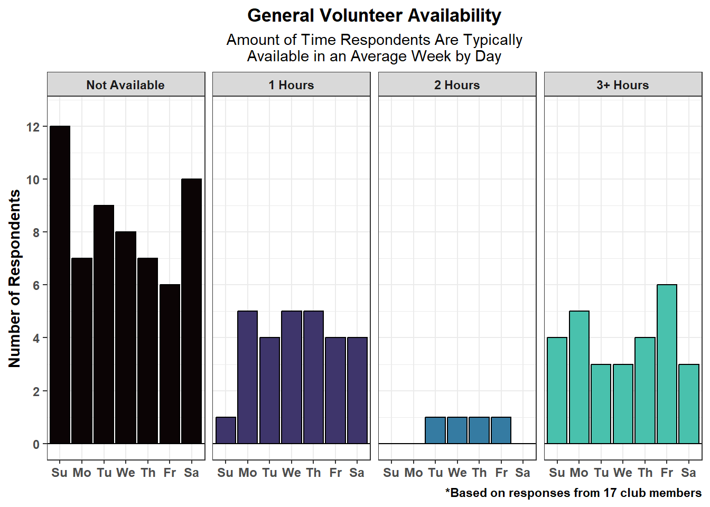
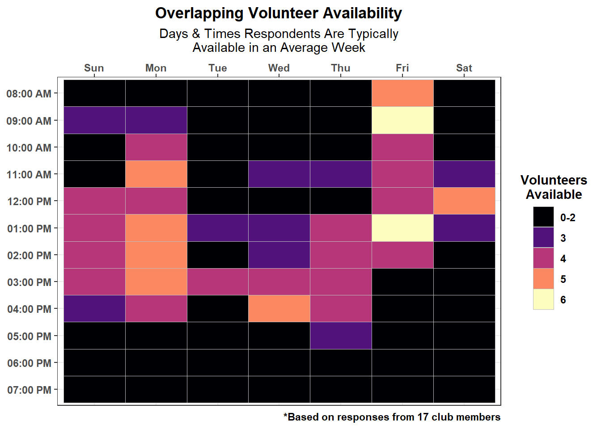
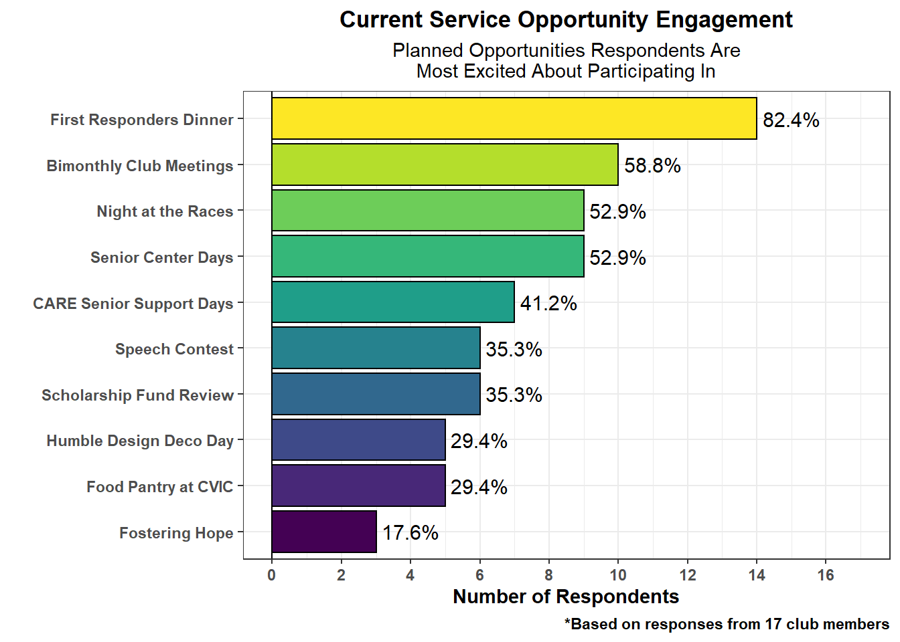

Solon Rotary Club Engagement
Prepared from Survey Results as of 05/02/2025
1 Introduction
The Solon Rotary Club is aiming to increase member engagement. A 4-question survey was designed to solicit information on member availability and which planned service events have the most interest. Members also had the opportunity to detail scheduling challenges and suggest additional opportunities.
The survey was conducted via Google Forms and distributed to club members via email and WhatsApp on Friday 04/25/2025. The results in this report are based on the responses as of Friday 05/02/2025. A total of 17 out of 26 members (65.4%) completed the survey, and all responses were anonymous.
2 Respondent Availability
On average, respondents had 4-6 hours of regular availability per week. Below, the number of respondents was totaled by day of the week and the amount of time available.
The days with the fewest respondents available were Sunday, Tuesday, Wednesday, and Saturday. When respondents are available, it is generally for only 1 hour at a time. The most respondents available for 3+ hours was on Mondays and Fridays.
Below, the number of respondents available was totaled by time of day.

The two time periods which maximized the number of overlapping available respondents were Mondays from 12:00-5:00pm and Fridays from 8:00am-4:00am, specifically 8:00-11:00am. The next two best windows were Sundays from 1:00-5:00pm and Thursdays from 2:00-6:00pm. Wednesdays from 4:00-6:00pm and Saturdays from 12:00-3:00pm are candidates for shorter windows of time.
3 Current Opportunities
Most respondents were excited about 3-5 of the 10 planned service opportunities each.

The most popular planned activity is the First Responder’s Dinner, followed closely by A Night at the Races. Respondents also had strong positive responses to our 2 planned senior-focused opportunities: senior center days and CARE senior support days. The bimonthly club meeting was also popular.
Fostering Hope was the planned opportunity with the least engagement. The food pantry at CVIC and the Humble Design Deco Day also did not have high appeal for respondents.
4 Challenges Faced
4 respondents described the issues they have which prevent them from volunteering more often. Below is a summary of those challenges, which have been paraphrased.
- Opportunities scheduled during work hours
- Already have a lot of commitments on the books
- Travel conflicts with events
- Health issues limiting mobility
5 Member Suggestions
9 respondents gave suggestions for additional service opportunities. Below is a summary of those suggestions, which have been paraphrased.
- More volunteer events in Solon itself
- Engage more with first responder organizations
- Joint events with local groups (e.g. Benevolent Fund, Italian Club, Athletic Boosters)
- Have a table at Solon functions (e.g. Farmer’s Market, Spring Festival, Community Park) to recruit new members, network with community, do fundraising/raffles, etc.
- Fewer events with more people per event, so the same people aren’t doing all the projects
6 Insights & Opportunities
6.1 Engagement
The response rate was 65.4%, or 17 out of 26 members. 9 members (34.6%) did not respond to the survey. It’s hard to draw conclusions from missing data, but this may represent the share of members least likely to participate in volunteer activities. There may be better ways to communicate with members than the current method(s).
- Insights
- Emails mostly come from personal accounts.
- Members can ‘reply-all’ to emails.
- Emails don’t always have informative subject lines or are chain emails (e.g. “Fw: CVIC - Logistics for April Food Pantry”).
- Group chats like WhatsApp can lead to notification fatigue.
- Opportunities
- Set up website-based emails (e.g. president@solonrotary.org, admin@solonrotary.org) that include “Solon Rotary Club” in the name (e.g. Solon Rotary Club; President, Solon Rotary Club).
- Use Bcc to send emails to Members@solonrotary.org. Instead, Cc the person in charge of replies.
- Provide a roster of contact information to members.
- Prioritize using Volunteer Mark to communicate volunteer needs to members (in progress).
6.2 Availability
- Insights
- Monday afternoons and Friday mornings are the weekdays with the most people consistently available. Thursday afternoons were next best.
- Sunday afternoon is the weekend time with the most people consistently available. Saturdays around noon was next best.
- The fewest people are consistently available on Tuesdays, Wednesdays, and Saturdays.
- Opportunities
- Scheduling activities immediately after the bimonthly meeting or on off-weeks may be a good way to increase engagement.
- Sunday afternoons and Saturdays around noon may be the easiest time for those with conflicts during the work week.
- Events requiring long time commitments are best held on Sundays, Mondays, Thursdays, and Fridays.
- Avoid scheduling opportunities on Tuesdays and Wednesdays.
6.3 Current Opportunities
- Insights
- The First Responder Dinner and A Night at the Races are the most popular events currently planned.
- Respondents were excited about the bimonthly meetings.
- Activities supporting seniors were generally popular.
- The CVIC food pantry, Humble Design Deco Day, and Fostering Hope opportunities were the least exciting to respondents.
- Opportunities
- Given their popularity, we might look towards doing more one-off events that engage with the community or joining in with existing local events that people are already attending.
- People are excited about volunteer activities involving seniors.
- Given the lack of regular availability on Tuesdays, we may struggle to continue providing volunteers for the food pantry at CVIC.
- We may need to do more to promote opportunities with Humble Design and Fostering Hope or look at alternative ways to engage with these organizations.
- It could be good to find opportunities that are more flexible and/or can be done on one’s own schedule, given the challenges people face in finding time.